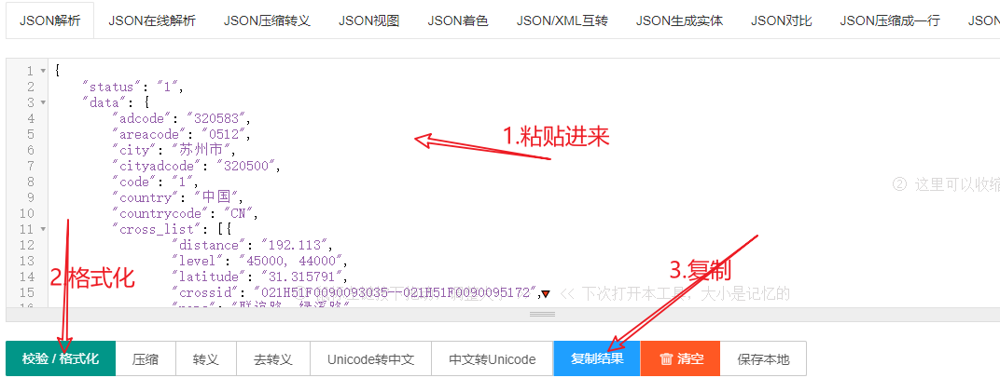
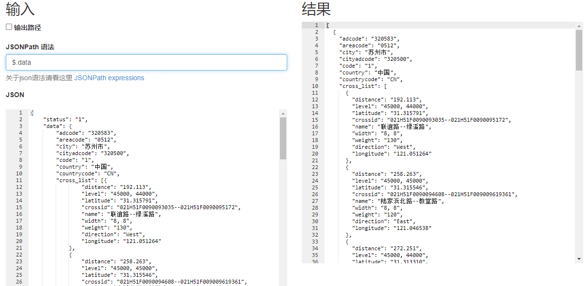

# 工具准备
Pycharm：python 编辑工具。
Json 在线解析工具：https://www.sojson.com/
jsonpath 在线解析工具：http://www.e123456.com/aaaphp/online/jsonpath/
# 案例：免费的地图接口
请求接口如下：
import requests | |
url = "https://ditu.amap.com/service/regeo?longitude=121.04925573429551&latitude=31.315590522490712" | |
resp = requests.get(url) | |
print(resp.text) |
返回数据如下：
{ | |
"status": "1", | |
"data": { | |
"adcode": "320583", | |
"areacode": "0512", | |
"city": "苏州市", | |
"cityadcode": "320500", | |
"code": "1", | |
"country": "中国", | |
"countrycode": "CN", | |
"cross_list": [ | |
{ | |
"distance": "192.113", | |
"level": "45000, 44000", | |
"latitude": "31.315791", | |
"crossid": "021H51F0090093035--021H51F0090095172", | |
"name": "联谊路--绿溪路", | |
"width": "8, 8", | |
"weight": "130", | |
"direction": "West", | |
"longitude": "121.051264" | |
}, | |
{ | |
"distance": "258.263", | |
"level": "45000, 45000", | |
"latitude": "31.315546", | |
"crossid": "021H51F0090094608--021H51F009009619361", | |
"name": "陆家浜北路--教堂路", | |
"width": "8, 8", | |
"weight": "120", | |
"direction": "East", | |
"longitude": "121.046538" | |
}, | |
{ | |
"distance": "272.251", | |
"level": "45000, 44000", | |
"latitude": "31.313310", | |
"crossid": "021H51F0090093125--021H51F0090095172", | |
"name": "陆家浜南路--绿溪路", | |
"width": "8, 8", | |
"weight": "130", | |
"direction": "NorthEast", | |
"longitude": "121.048214" | |
} | |
], | |
"desc": "江苏省,苏州市,昆山市", | |
"district": "昆山市", | |
"districtadcode": "320583", | |
"hn": "20号", | |
"message": "Successful.", | |
"poi_list": [ | |
{ | |
"parent": "", | |
"address": "陆家浜北路21号", | |
"distance": "160", | |
"latitude": "31.315495", | |
"weight": "0.0", | |
"type": "医疗保健服务;综合医院;综合医院", | |
"typecode": "090100", | |
"f_nona": "", | |
"childtype": "", | |
"name": "昆山市第四人民医院", | |
"tel": "0512-57671209;0512-57877735;0512-57879719", | |
"towards_angle": "", | |
"poiid": "B020007Y9K", | |
"entrances": [ | |
{ | |
"latitude": "31.314923", | |
"longitude": "121.047078" | |
} | |
], | |
"end_poi_extension": "29", | |
"direction": "West", | |
"longitude": "121.047568" | |
}, | |
{ | |
"parent": "", | |
"address": "菉溪路22号", | |
"distance": "124", | |
"latitude": "31.314873", | |
"weight": "0.0", | |
"type": "政府机构及社会团体;政府机关;乡镇级政府及事业单位", | |
"typecode": "130105", | |
"f_nona": "", | |
"childtype": "", | |
"name": "陆家镇人民政府", | |
"tel": "0512-57671003", | |
"towards_angle": "153.10", | |
"poiid": "B020007YBU", | |
"entrances": [ | |
{ | |
"latitude": "31.31441", | |
"longitude": "121.048419" | |
} | |
], | |
"end_poi_extension": "29", | |
"direction": "SouthWest", | |
"longitude": "121.048248" | |
}, | |
{ | |
"parent": "", | |
"address": "菉溪路22号", | |
"distance": "139", | |
"latitude": "31.314555", | |
"weight": "0.0", | |
"type": "政府机构及社会团体;政府机关;乡镇级政府及事业单位", | |
"typecode": "130105", | |
"f_nona": "", | |
"childtype": "", | |
"name": "陆家镇人民代表大会", | |
"tel": "", | |
"towards_angle": "153.20", | |
"poiid": "B020007YBT", | |
"end_poi_extension": "", | |
"direction": "SouthWest", | |
"longitude": "121.048435" | |
}, | |
{ | |
"parent": "", | |
"address": "菉溪路22号", | |
"distance": "140", | |
"latitude": "31.314540", | |
"weight": "0.0", | |
"type": "政府机构及社会团体;政府机关;乡镇级政府及事业单位", | |
"typecode": "130105", | |
"f_nona": "", | |
"childtype": "", | |
"name": "中共昆山市陆家镇委员会", | |
"tel": "", | |
"towards_angle": "153.1", | |
"poiid": "B020008HW1", | |
"end_poi_extension": "", | |
"direction": "SouthWest", | |
"longitude": "121.048437" | |
}, | |
{ | |
"parent": "", | |
"address": "菉溪路22号", | |
"distance": "138", | |
"latitude": "31.314547", | |
"weight": "0.0", | |
"type": "政府机构及社会团体;政府机关;乡镇级政府及事业单位", | |
"typecode": "130105", | |
"f_nona": "", | |
"childtype": "", | |
"name": "政协陆家镇工作委员会", | |
"tel": "", | |
"towards_angle": "153.20", | |
"poiid": "B020016BUS", | |
"end_poi_extension": "", | |
"direction": "SouthWest", | |
"longitude": "121.048455" | |
} | |
], | |
"pos": "在陆家镇人民政府附近, 在教堂路旁边, 靠近联谊路--绿溪路路口", | |
"province": "江苏省", | |
"provinceadcode": "320000", | |
"result": "true", | |
"road_list": [ | |
{ | |
"distance": "79", | |
"level": "4", | |
"latitude": "31.3149", | |
"name": "绿溪路", | |
"width": "8", | |
"roadid": "021H51F0090095172", | |
"direction": "NorthWest", | |
"longitude": "121.05" | |
}, | |
{ | |
"distance": "141", | |
"level": "5", | |
"latitude": "31.3163", | |
"name": "教堂路", | |
"width": "8", | |
"roadid": "021H51F009009619361", | |
"direction": "SouthEast", | |
"longitude": "121.048" | |
}, | |
{ | |
"distance": "192", | |
"level": "5", | |
"latitude": "31.3158", | |
"name": "联谊路", | |
"width": "8", | |
"roadid": "021H51F0090093035", | |
"direction": "West", | |
"longitude": "121.051" | |
} | |
], | |
"sea_area": { | |
"name": "", | |
"adcode": "" | |
}, | |
"tel": "0512", | |
"timestamp": "1634391446097", | |
"version": "1.0" | |
} | |
} |
requests 库获取的响应是 resp，而 resp.json () 获取的是字典类型，resp.text 获取的是 json 字符串，所以把 resp.text 获取的数据粘贴到工具中进行转换。
Json 在线转换如图所示：

Jsonpath 在线解析工作如下：

# jsonpath 语法
- $ 代表整个 json 数据的值。（根元素）
- . 代表的是层级关系，类似 windows 电脑的 /。（子元素）
- .. 代表相对的层级关系，类似 windows 电脑的 //。
- @ 当前元素。
- ?() 应用过滤表达式。
- 通配符 * ，表示所有元素。
- [索引] 列表中获取元素，就通过列表中的索引值进行获取，索引值是从 0 开始的。[0,1] 或 [start:end] 可对列表进行切片获取对应的元素。
- [?(@.price)] 获取带有对应属性的键。
- [?(@.price<10)] 获取带有对应属性且对应属性的值具有某些特点的键。
例如：
$..name 获取resp.text里所有的name的值 | |
$.data.cross_list[1].name 获取cross_list中第二个元素的name值 | |
$..cross_list[:2].name 获取cross_list中前两个元素的name值，也可[0:1] | |
$.data.poi_list[?(@.direction)] 找出poi_list里包含有direction属性的值 | |
$.data.cross_list[?(@.weight=="130")] 找出cross_list里的weight等于”130”的值 | |
$.data.cross_list[*].name cross_list列表所有键里面name的值 | |
$.data..name data里所有name | |
$.data.* store的所有元素 | |
$..* 所有元素 |
# python 使用 jsonpath：
首先，安装第三方库： pip install jsonpath
JsonPath 的语法： jsonpath.jsonpath()
- 参数：json 对象，jsonpath 表达式
- 返回值：列表
import requests | |
import jsonpath | |
url = "https://ditu.amap.com/service/regeo?longitude=121.04925573429551&latitude=31.315590522490712" | |
resp = requests.get(url) | |
status = jsonpath.jsonpath(resp.json(),'$.status')[0] | |
print(f"从响应值里面获取的status是{status}") |